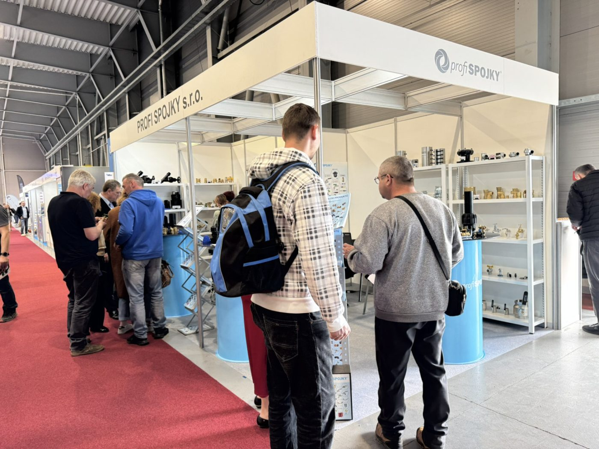
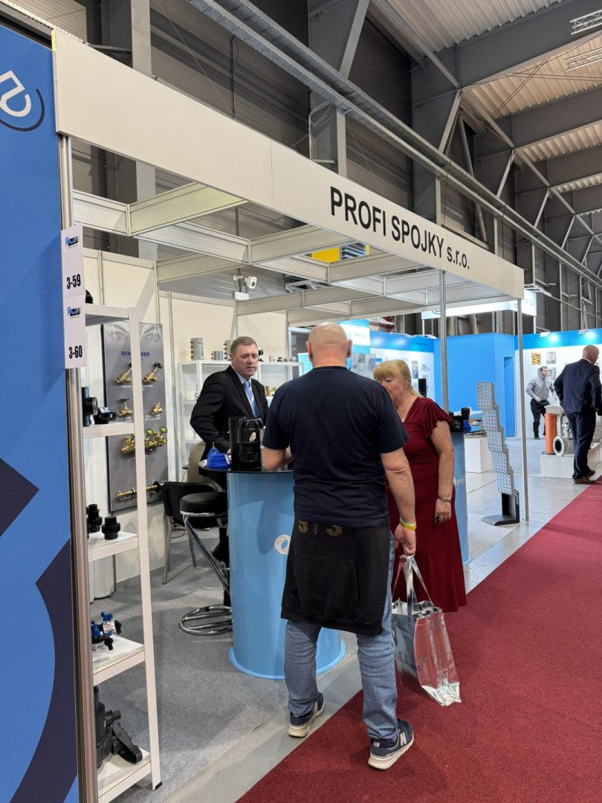
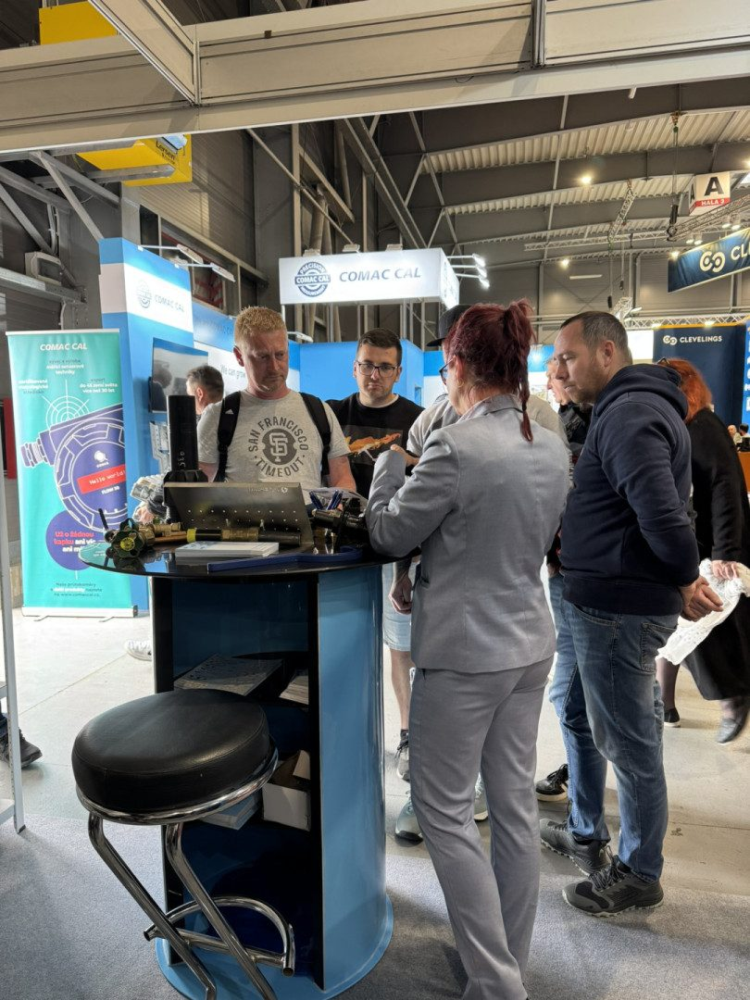
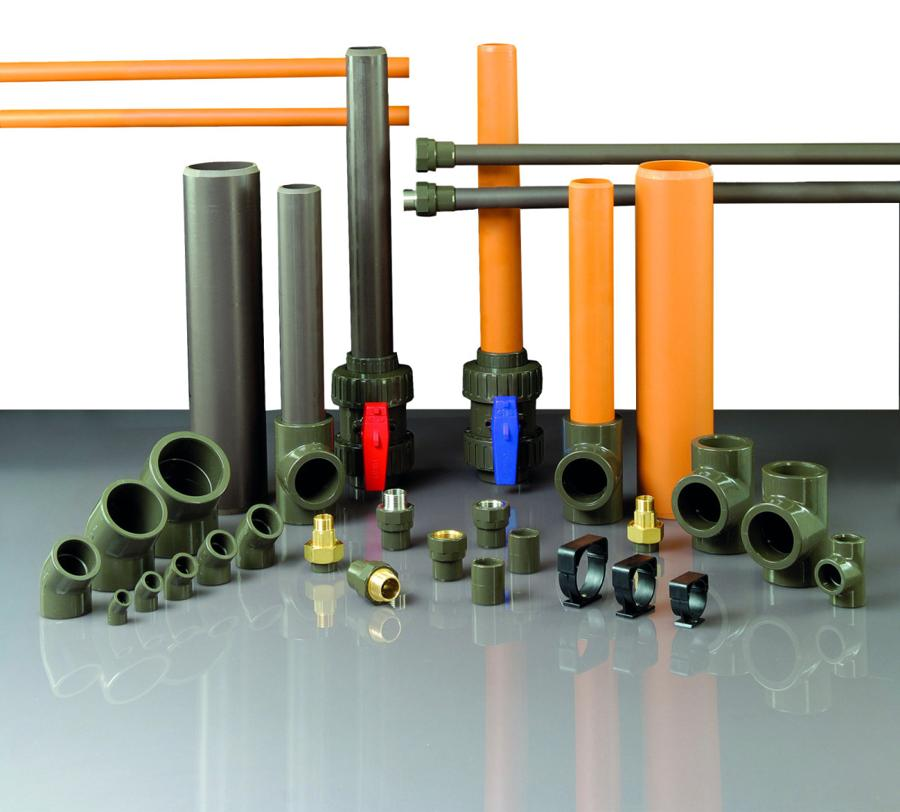

PROFI SPOJKY s.r.o.
Dovozce spojovacích produktů a uzavíracích armatur pro vodu, plyn a topení.
Firma PROFI SPOJKY s.r.o. byla založena v roce 2010. Specializuje se na dovoz spojovacích produktů a uzavíracích armatur pro vodu, plyn a topení z materiálů plast, mosaz a litina. Zastupuje dvanáct zahraničních výrobců a produkty prodává přes své obchodní partnery pod těmito značkami. Zároveň se stará o platnost certifikátů výrobků dle požadavků legislativy a poskytuje školení a technické poradenství.
Produkty distribuuje partnerům ze svého centrálního skladu v Jesenici, Praha-západ. Produkty můžete zakoupit na více než 200 prodejních místech v celé České republice i na Slovensku.

Dovoz a certifikace
12 zahraničních výrobců. Certifikáty výrobků mají každoroční dohled vydavatele.
Centrální sklad
Krajní 801, Jesenice u Prahy. Skladové zboží dodáváme do 48 hodin.
Školení a poradenství
Obchodní a technické poradenství pro ČR i Slovensko.


